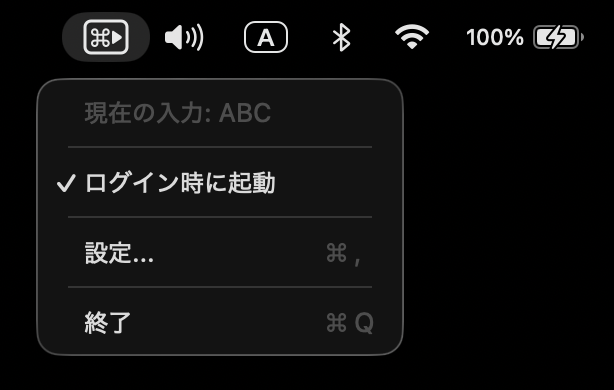
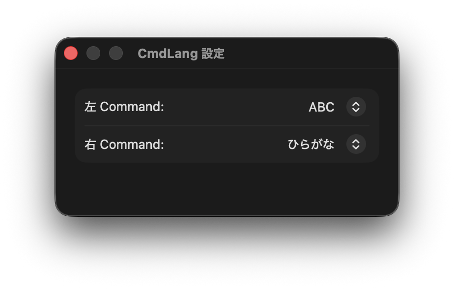

Features
シンプルで、邪魔しない
必要な機能だけを、ミニマルに。作業の流れを止めずに IME を切り替えられます。
左右 Command で切り替え
左は英語、右は日本語など、キーごとに入力ソースを割り当て可能。
メニューバーに常駐
メニューバーに常駐し、必要なときだけメニューを開いて操作できます。
自由な割り当て
設定画面で左右それぞれに好みの入力ソースを割り当て。英語・日本語以外にも対応。
ログイン時に自動起動
一度設定すれば、Mac 起動後は自動で立ち上がります。
How it works
3 ステップで設定完了
インストールから使い始めまで、数分で完了します。
1
ダウンロードして起動
zip を展開して CmdLang.app を起動します。メニューバーに ⌘ アイコンが表示されます。
2
アクセシビリティ権限を許可
初回起動時に権限が求められます。「システム設定 → プライバシーとセキュリティ → アクセシビリティ」で CmdLang を許可してください。
3
入力ソースを割り当てる
メニューバーアイコン → 「設定」を開き、左右 Command キーにそれぞれ入力ソースを割り当てます。あとは Command キーを押すだけで切り替わります。
Preview
シンプルなメニューバー表示
常駐するだけで、余計なウィンドウは一切表示しません。
Screenshots
スクリーンショット


Requirements
動作環境
- OSmacOS 13 Ventura 以降
- アーキテクチャApple Silicon / Intel
- 価格無料
- 必要な権限アクセシビリティ